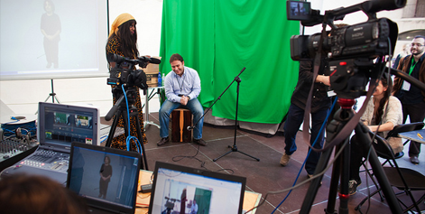

Open Video
Open, hackable video has untapped potential as a learning resource. What does video have to do with freedom and the web? Why is it important to learning?
My mind is regularly blown by the way web video is changing how we learn, and increasingly how we teach. I watch my 11-year-old become a bit of a geek. He doesn’t use help files or FAQs to learn new software. He watches YouTube tutorials. And, as his skills grow, he shows off and shares by making his own.
Clearly, video packs way more info punch than print. And the ubiquity of online video means we all tap into rich (and fast) new learning opportunities constantly. TED’s Chris Anderson released a great talk a few weeks ago.
Anderson points out that we live in a world of online video fueled by a desire to dance, sing, perform, play, and think. Most people who post videos online are not driven by the desire to teach—they just want to show off or have fun. Yet, as we watch them, we learn.
There is, however, a huge online phenomena very much about the desire to teach: web video tutorials. A great example is the Khan Academy: Driven by frustration with how schools teach math and science and also the easy access of YouTube, Sal Khan has produced a massive, high quality collection of 1,800+ web tutorials. The idea has landed him a $2 million Google grant and has attracted millions of viewers eager to learn. What’s even more exciting to me is that this sort of teaching isn’t limited to overachievers like Khan. YouTube alone holds over 10 million tutorials (search: tutorial and how-to). Videos with people teaching everything from how to set up WordPress (400,000 views), to how to curl your hair with a paper bag (2 million views), to how to moonwalk (8 million views).
The question remains: What does this mean for the future of education? What does it mean for who we turn to when we want learn something? And how do we all start to teach each other?
{kind=link}
Filmmaker and activist, Brett Gaylor makes his home in Victoria on Canada’s west coast. He’s the kind of interlocutor who emails you links to stuff even while you’re still talking—bursting at the seams with new ideas.
http://popcorn.js.orgHow did you get involved with Mozilla?
I got to working with Mark Surman right around the time my film, “RIP: A Remix Manifesto,” was released. It was all about mashup and remix culture and the tension between old and new ways of thinking about collaboration and proprietary ownership and knowledge and the opportunities of a connected digital world. But the experience of watching this film on the web was pretty much the same you would have watching on TV. You were a passive consumer of this content.
So you wanted people to have the power to rip and remix your own movie?
Pretty much! I met Mark at the Open Video Conference and I expressed that while I had a lot of excitement about where the technology was heading, I felt there wasn’t enough being done about how this could actually affect the language of cinema or how filmmakers think about their work in this new medium.
I have been on the web from the beginning. And the experience with video now and then is pretty much the same. The rest of the web has seen this massive innovation with mashups and what we used to call Web 2.0. But video has not been party to that up until very recently. So Mark invited me to join the team and see if I could eat my own dog food a little bit. I started a project as part of Mozilla called Web Made Movies.
Tell me about Web Made Movies!
We think of it as Mozilla’s open video lab. There are filmmakers like myself working with software designers and developers—and there are much more collaborative relationships than has been typical. I’ve made many websites in my life and I’ve been on both sides of this client/service relationship. Typically filmmakers think about the web as a place to put their content. They don’t make videos that are of the web: mashable, re-mixable, hackable, bringing in different sources, or personalizing to the viewer.
So Web Made Movies is a lab where the story ideas of the filmmaker and the traditions of cinema could mash up with the thought processes and traditions of the web to make something that’s radically different and could actually formally change what video on the web can be.
And you made this thing with students called Popcorn. What is it?
Right now we don’t have a World Wide Web of video—we have just these isolated silos. The rest of the web page on a technical level has no idea what’s going on inside that ‹object embed//›, So with a bunch of students we created a JavaScript library called Popcorn.js. It’s way of creating a video that triggers different elements to appear in a web page as it’s playing. So if a new character comes into the scene, the subject matter will trigger Google searches and the video interacts with the rest of the web.
So what does this video stuff have to do with education?
I think that students who are being educated today need to learn how to synthesize different sources and answer questions of veracity and authorship. They also have shorter attention spans. Showing a film in a classroom no longer works. The class times are too short and the students do not engage with media in that way any longer. You cannot roll the TV to the front of the room and say: Okay, now learn.
I mean, filmstrips have always been seen as the refuge of the lazy teacher.
Right, but even more so today, the kids don’t sit back that way. These are kids who are used to having access to the entire history of recorded music. They want to lean forward and learn different perspectives on that piece of media.
Can students record their experience of browsing, learning, synthesizing, and giving their own editorial opinion on a topic for learning that they’re designing? And how do we rethink the idea of a book report in a connected web environment? How do you make a video or web report and present your research that incorporates the open web? Or do a YouTube response video that describes how something made them feel that triggers web pages and incorporates a lot of sources?
And then, we’re involving teachers. Teachers can, as they’re browsing with the web, select segments of videos that they find and create their own customized mashup. So when students go and watch it, they are also presented with other links they could dig into.
And how does this goal of transforming education fit in with your broader mission?
If we’re going to succeed at this goal of keeping the web open, we need people from other disciplines and all walks of life to participate in that process. As a filmmaker, I bring some perspective that traditionally wasn’t held within Mozilla. And if we want educators to help us safeguard the open nature of the Internet, we need to work collaboratively with them and create structures that allow their perspective on that to be heard.
So reaching out to educators is about finding allies and fellow travelers?
On a deeper level, of course, we want to disrupt education. We want education and schools to operate more like the web, in that they’re transparent and hackable and open for students to be able to learn in the new ways that the web allows.
Teachers want their students to learn. And the web, and specifically the open web, obviously is the most powerful engine we’ve ever created for learning. We are interested in and hope that the education community sees the value of a truly open web as well—I think they do already. They have an altruistic desire to be able to educate tomorrow’s citizens and I think there are natural allies there.
How does this relate to your own educational experience?
I was really lucky that the school that I went to here in the Gulf islands in British Columbia got a computer lab in the final year that I graduated. Before that, my school district gave a discount for kids who wanted to buy Macs. I saved up and bought a Mac and taught myself HyperCards when I was 11-years-old. It sparked something in me to see my computer as something that was malleable and that I could use creatively.
When I was in high school we had an animation lab. So I could use the tool not as something to use spreadsheets but something to create. I eventually wound up going to Concordia University in Montreal. But what was most valuable for me was having a computer I could hack when I was 11.
“Video is part of this ecosystem that students can learn with,” before the festival, Brett Gaylor recalled: “My clothes dryer just broke and I wanted to know how to fix it. And I Googled it and the first thing that came up was somebody showing me how to do it. How can we integrate that into the classroom?”
{kind=link}
So that’s one big crossover—call it the YouTube-ification of the classroom.
A second layer of possibility has to do with freedom—or making video content more accessible and more available to be mucked about with. Nicholas Reville is a co-founder of the Participatory Culture Foundation, “a nonprofit, building consumer technology and trying to promote open decentralized infrastructures.” He’s the creator most recently of Universal Subtitles.
“Given the importance of subtitles, it’s amazing how difficult it is to add subtitles and captions to a web video,” Reville explains. “That felt like a huge opportunity to change video for the better—make it more open and accessible.”
This, of course, has huge applications for education. “Translation, making it accessible to anyone who’s deaf or hard of hearing. And there’s interesting opportunities for Same Language subtitling,” says Reville. “For literacy, there are huge implications, in terms of open education resources and things online.”
So call this the Rosetta Stone-ification of video.
Ben Moskowitz of the Open Video Alliance, which is a coalition of organizations and individuals devoted to creating and promoting free and open technologies, policies, and practices in online video, summed up open video with the Mozilla slogan: “View Source has a posse.” View Source is a menu item you can hit on any web page to peek under the hood and see the HTML that creates the page.] View Source doesn’t work for Flash, the format in which most videos are available on the web, but it does work for HTML 5, another video format endorsed by Steve Jobs, and others.
Moskowitz explains:
What they’re delivering to you with Flash is binary—only machine readable. The self-taught, garage, innovative way of doing things, that’s a huge advantage of HTML 5. If I write an amazing innovative clever app, someone else can go look under the hood and see how it works and fix it, and they can reconfigure it.
So one big part of what the Open Video Alliance is trying to do is to make sure more video is available in readable formats. A second step is making larger numbers of videos available under a Creative Commons license, for example, on Wikipedia (see Get Videos on Wikipedia). What’s missing, too, for the full applications of video in the classroom, is a set of tools to allow video to be easily remixed and annotated, as with the Popcorn project.
Rich media is not searchable, says Moskowitz, but I can do a Google search on transcripts. Let’s say I’m doing a paper about the Corn Bill. I can say go to Google: Show me videos of senators from Iowa debating corn subsidies between 2003-2009. Within these 45 videos search term “Hardworking American farmer” Take those clips and make a montage—“Daily Show” style. And that’s my term paper.
Call this the Jon Stewart-ification of the classroom.
But the denizens of the Open Video Lab at the Festival were too busy making awesome stuff to spend much time on theory. Their collaborative projects were some of the coolest stuff to come out of the fest, by far.
As Gaylor said in his pitch to the crowd on the first day of the fest: “We’re in the Video Lab on the 2nd floor to seize the moment of open video—HTML 5—to allow us to build and embrace video as a first class citizen of the web: hackable/remixable interoperable.
All of this is being built as we speak. We want to: blow Up Your Video like AC/DC!
And people showed up. And stayed for two days. Elizabeth Castro, a computer book writer, spent most of her time in the Open Video Lab. She wrote about her experience as a participant:
I opted to spend the day in the Open Video Lab. I wasn’t quite sure what that was going to mean, and I think a lot of the people, including the organizers, Brett Gaylor, David Humphrey, and Ben Moskowitz might not have either. That didn’t stop them from skillfully guiding and coaching the group to figure out some hands-on projects to work on.
Brett and David began the workshop by asking us “what is possible with open video” and then showing us a few demos that took advantage of HTML 5. There was a page with a video of a whale with an overlaid canvas element that mapped the audio to a visual representation. There was a kung fu video that used the browser to add a shading effect in real time. There were even video games that mixed 3d, Flickr, Twitter, and rendered right in the browser.
Ben Moskowitz showed us a demo of MediaThread, a project at Columbia that allows professors and students to reference, annotate, and cite videos available through YouTube or other sources. It looked really valuable. The code is open-source, but the working project is unfortunately available only to folks associated with Columbia University.
Ben also showed us Pad.ma, an Indian site that catalogs videos with all sorts of different kinds of metadata, including name, title, keywords, and words in the transcript, and then lets visitors search through the metadata for particular videos.
Then it was time for the hands-on section. They showed us the example they had pulled together that morning, referenced above, using the popcorn.js library. Finally, we decided it was how to expose existing metadata that was already related to a video. There were a few people who had libraries of video as well as XML structured metadata and wanted to be able to overlay the metadata on the video so that the metadata was revealed in the browser.
Gabriel Shalom is a filmmaker who also got very excited about Open Video at the Festival.
Last week, I attended the Mozilla Festival in Barcelona. It gave me an opportunity to collaborate with an amazing ad hoc team of people in the context of the Open Video Lab, coordinated by Brett Gaylor and David Humphrey. Together, over the course of a two-day sprint, a big team of us collaborated on a demo of the popcorn.js JavaScript library that really shows off the potential beauty of web made movies.
The tweets are aggregated from the #futureofeducation hashtag. The Flickr photos that appear in the demo are based on timeline metadata that I approximated by putting dummy content (the blue events in the screenshot above) on the timeline to get a sense of a rough rhythm. I then gave a rough approximation of that time code information to Berto Yáñez, the programmer who did much of the heavy lifting on the demo. Oscar Otero helped with the design of the page. Oscar, Berto, and Xabier all work together at the Galician web company, A Navalla Suíza.
David Humphrey teaches at Seneca College and is a longtime Mozilla contributor and developer. He helped run the Open Video Lab.
Last week I was in Barcelona, Spain for the Mozilla Foundation’s Festival. The festival’s theme was Learning, Freedom, and the Web, and attendees came to participate in sessions and workshops on a variety of education, open source, and open web topics. Together with Mozilla’s Brett Gaylor, I ran the Open Video Lab.
Our goals for the Open Video Lab were simple to state and harder to guarantee—show people what you can do with HTML 5, link film people with developers with storytellers with designers with educators; and to, as Mark Surman is fond of saying, “help people build cool shit using the open web.” Thanks to the amazing people who came to the festival, we did all that and more.
David Humphrey got us thinking about the projects we had talked about on Thursday and helped us both focus on what the projects consisted of and what we were trying to solve, as well as what skill sets the members of the group had to offer. There were a lot of JavaScript and HTML coders as well as a few designers and video production people. I was totally intimidated by the idea of writing actual code with these guys, and at the same time didn’t want to lose the opportunity of learning what they knew. I was also unsure I had enough to offer myself, though thankfully I wasn’t the only one to say this.
We ended up dividing into two groups. The first, led by Brett Gaylor, wanted to create a jazzier, prettier demo of popcorn.js, a JavaScript library that allows you to line up data to particular points on a video timeline, and thus create mashups like the one they showed the day before in which people in the video tell where they’re from and this information is used to trigger Google Maps and Wikipedia giving more information on that location.
The second group, which I was a part of, wanted to figure out a way to expose existing metadata, like the title, creator, or date a video was produced, that was associated with a video either right in the page (with RDFa), or with an external XML file, so that people watching the video could actually see information about the video with a single click.
I think the part that most surprised me is how small the individual pieces of the project seemed at first, and how much they all realized that they weren’t really that small, and would take the better part of the day to create, even divided up between the participants as they were. It was also interesting seeing how they wrote the code in a way that they could test it separately, but that it could later fit together with the other pieces. I loved how they really drew on the different strengths of this randomly assembled group of people and made it possible to all work together. There was really good energy in the room.
Once all the code was together, they connected the last computer to a projector so that we could all see and debug the final project together. At this point, the designer folks jumped in and offered suggestions about positioning and font size. What a collaboration! We found the extra space and got it out just in time to finish the capture, and run down to the presentation with USB stick in hand.
Back to David Humphrey...
For Brett and myself, the single hardest part of preparing for this event was the fact that we didn’t know who would come. It’s hard to program two days of content when you don’t know the make-up of your group, their interests, and backgrounds. Further, we didn’t know if people would only want to come for an hour and then leave to attend other sessions, or stick it out with us and stay to build things.
In the first session we had a packed room, and were met with professors, filmmakers, web developers, designers, producers, students, translators, writers, and artists. It was a fantastic group, and had all the energy and diversity we needed to actually build some things. Also, there was a core of people who were determined to stay and see things get finished.
On the first day Brett shot a really quick video getting various people in the square to say where they were from. Nicholas Reville then took the video and had people translate and subtitle it into 17 languages using the Universal Subtitles project. Next we built a simple Google Maps tool to allow us to extract longitude and latitude info so we could get geo-data for all the speakers. Finally we put it altogether using Popcorn.js to create a mash-up of the video, Google Maps, and Wikipedia pages (video of demo here).
After we’d built an example open web video demo together, it was time to think about what we might build next. After much debate and discussion, we agreed to take on two projects: 1) make a film about the future of education using the open web; and 2) make it possible for librarians, archivists, and other metadata people to have their bibliographic metadata reveal itself to users.
The next day we spent an entire day building things together. The metadata team worked with JavaScript, RDFa, and Dublin Core data, and built a custom overlay UI to make it possible to see info like the video’s title, creator, and date. Meanwhile, the second group took advantage of the incredible set of educational experts on-hand at the festival to conduct interviews on the future of education. This being Europe, they shot five interviews, each in a different language (French, Catalan, German, Italian, and English). They then had these translated to English, and wrote the subtitles. The rest of the group figured out how to get Flickr and Twitter content to mix with the video, and worked with the designers on an overall aesthetic.
It was an amazing feeling to work in the lab that day. Everyone was engaged and valuable–not one of us able to do everything that had to get done. Our main goal had been to give the attendees an authentic experience of working on and with the open web, and doing so in a highly collaborative way. This was exactly what happened, and it was a thrill to be part of it.
In the end, there was a very exciting dramatic reveal as Brett Gaylor, Dave Humphrey, and Gabriel Shalom raced across the room with the video on a Flash Drive in the middle of the closing keynote’s “Best of the Fest.” The video was worth the hype: a short documentary on The Future of Education with interviews with luminaries in German, Italian, French, Spanish, and English, all subtitled by volunteers using the Universal Subtitling Tool, and time-synced with tweets under the #futureofeducation hashtag and photos pulled down from Flickr.
As lots of Festival attendees noted, the Open Video team was exemplary not only for its output but for the way they worked together. As Humphrey wrote: “It still amazes me that it was all done in one day (before 6:00 pm!), and I think it captures so much of what was going on at the festival: educators, artists, hackers from all walks of life coming together to share, learn, and build.” Somehow, they managed to take advantage of a wide variety of skills and levels of knowledge to pull a project together in record time. Shalom observed that “the number of contributors to this video is mind-blowing.” And the finished product wasn’t bad either, as the crowd exploded in applause, whoops, and hollers.
Video as a medium tends to attract devoted followers simply because it’s cool. This, combined with its information-richness (enriched even more with the adoption of “hyper-video”) make it an excellent learning tool. And by building demonstrations of the useful and cool nature of openness in video, the Open Video Lab pointed the way toward a new direction for Video, Freedom, and the Web. Or, as Humphrey wrote, “As we ran to the final keynote to present our projects, one of the filmmakers said to me, ‘So this can’t end today, we have to do more of this.’ A lot of us had that feeling.”
Check-out Echo Park Film Center
PROJECT:
THE POPCORN PROJECT
What it does: Turns boring old linear video into dynamic “hyper-video” or “social video,” pulling content from across the web right into the action. Events on the video timeline can trigger Flickr, Twitter, Google Maps, and Wikipedia content in real time.
Why: Shape the future of the moving image in a digital world. Make video work like the rest of the web: linkable, searchable, mashable, social, dynamic.
What’s next: Refine and simplify “Popcorn Maker,” a new web application that makes it easy for non-technical audiences to use Popcorn.js and create their own “Web Made Movies.” Try it at www.popcornjs.org/.
Check-out YouMedia
Check-out Gender Remixer